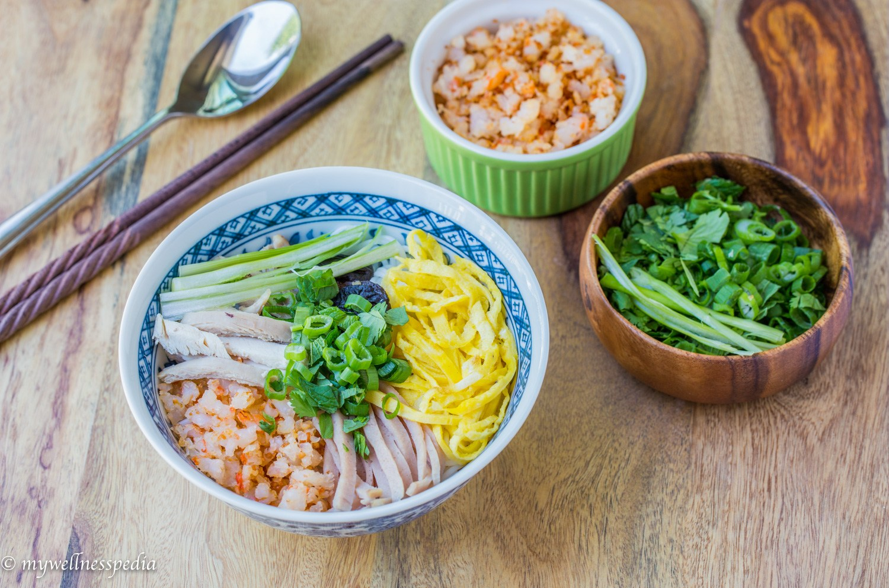
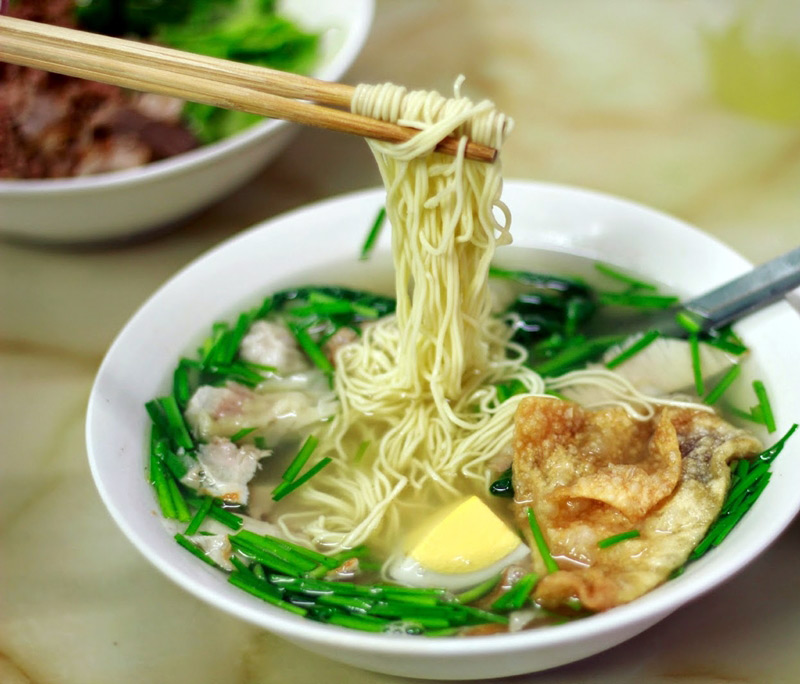

Trong món phở Hà Nội công đoạn chế biến nước dùng, còn gọi nước lèo, là công đoạn quan trọng nhất. Nước dùng của phở truyền thống là phải được ninh từ xương ống của bò cùng với một số gia vị. Xương phải được rửa sạch, cạo sạch hết thịt bám vào xương cho vào nồi đun với nước lạnh. Nước luộc xương lần đầu phải đổ đi để nước dùng khỏi bị nhiễm mùi hôi của xương bò, nước luộc lần sau mới dùng làm nước lèo. Gừng và củ hành đã nướng đồng thời cũng được cho vào.
Lửa đun được bật lớn để nước sôi lên, khi nước đã sôi thì phải giảm bớt lửa và bắt đầu vớt bọt. Khi đã vớt hết bọt, cho thêm một ít nước lạnh và lại đợi nước tiếp tục sôi tiếp để vớt bọt...Cứ làm như vậy liên tục cho đến khi nước trong và không còn cặn trong bọt nữa. Sau đó, cho một ít gia vị vào và điều chỉnh độ lửa sao cho nồi nước chỉ sôi lăn tăn để giữ cho nước khỏi bị đục và chất ngọt từ xương có đủ thời gian để tan vào nước lèo.
Có thể nói, phở Hà Nội có cái ngọt chân chất của xương bò, cái thơm của thịt vừa chín đến độ để vẫn dẻo mà lại không dai. Màu nước phở trong, bánh phở mỏng và mềm. Chỉ nhìn bát phở thôi cũng đủ thấy cái chất sành điệu, kỹ càng trong ăn uống của người Hà Nội. Một nhúm bánh phở đã trần qua nước nóng mềm mại dàn đều trong bát, bên trên là những lát thịt thái mỏng như lụa điểm mấy ngọn hành hoa xanh nõn, mấy cọng rau thơm xinh xắn, mấy nhát gừng màu vàng chanh thái mướt như tơ, lại thêm mấy lát ớt thái mỏng vừa đỏ sậm vừa màu hoa hiên.
Tất cả màu sắc đó như một bức họa lập thể hơi bạo màu nhưng đẹp mắt cứ dậy lên hương vị, quyện với hơi nước phở bỏng rẫy, bốc lên nghi ngút, đánh thức tất thảy khả năng vị giác, khứu giác của người ăn, khiến ta có cảm giác đang được hưởng cái tinh tế của đất trời và con người hợp lại. Chỉ húp một tý nước thôi đã thấy tỉnh người. Thịt thì mềm, bánh thì dẻo, thỉnh thoảng lại thấy cái cay dịu của gừng, cái cay nồng của ớt, cái thơm nhè nhẹ của rau thơm, cái thơm của thịt bò tươi mềm. Tất cả cứ ngọt lừ đi, ngọt một cách hiền lành, êm nhẹ mà chân thật, tuyệt kỹ hài hòa.
Ta có thể thưởng thức nhiều hương vị phở tại Hà Nội. Có ba món phở chính: Phở nước, Phở xào, Phở áp chảo. Trong ba loại phở trên thì phở nước là phổ biến hơn cả. Phở nước gồm có: Phở Bò, phở Gà, phở Tim gan. Tuy nhiên, người sành điệu chỉ ăn phở chuộng nhất phở Bò, thứ đến là phở gà và không chấp nhận những loại phở khác.
Đối với du khách nước ngoài thì phở được coi là món ngon hấp dẫn và lạ miệng bởi sự tinh túy. Để thưởng thức phở ngon thì cần phải để phở trong bát sứ chứ không phải là bát thủy tinh hay bát nhựa. Bát đựng phở không được quá to hay quá nhỏ. Nếu bát quá nhỏ, nước dùng sẽ chóng nguội và không có đủ chỗ để thịt, rau thơm và gia vị. Nếu bát to quá thì chưa ăn hết một bát bạn đã thấy chán vì phở chỉ là một món ăn nhẹ hoặc món ăn thêm.
Khi ăn phở, một tay cầm đũa còn tay kia cầm thìa. Dùng đũa tre là thích hợp nhất vì nó giản dị và không bị trơn khi gắp bánh phở. Bàn ăn phở cần hơi thấp so với bình thường để nước dùng không vương vào quần áo bạn khi cúi xuống gắp sợi bánh phở lên ăn.
Trông bạn sẽ rất kỳ cục nếu bạn uống bia hoặc trà đá khi ăn phở. Tuy nhiên, bạn nhấm nháp một chén cuốc lủi để bát phở thêm ngon thì có thể chấp nhận được. Nhưng thường thì không dùng đồ uống hoặc các đồ ăn khác khi ăn phở, ăn như vậy mới càng thấy phở ngon.
Nếu có cơ hội đến với Hà Nội thì bạn nên thưởng thức hương vị phở đặc trưng này nhé! Phở Hà Nội là như thế, đó là cái ngon của tất thảy những chất liệu đời thường Việt Nam nhưng đã được bàn tay tài hoa của người Hà Nội làm thành tác phẩm!
2. Bún thang

Theo giải thích của người xưa, chữ thang” trong bún thang có nghĩa là canh - một món canh bổ dưỡng (cũng như sâm thang). Trong các món bún Hà Nội, bún thang là món xếp vào hàng đặc sản cao cấp và đắt tiền nhất, một thứ quà Hà Nội thanh nhã và tinh tế.
Nấu bún thang là một việc khá công phu, từ khâu chuẩn bị đến chế biến. Món bún thang tính sơ sơ phải cần đến 20 nguyên liệu. Công phu đầu tiên là chuẩn bị nồi nước dùng. Độ ngọt của nước dùng được tạo ra từ xương ống đun kỹ, xương gà, mực khô, tôm he nấu sôi cho ra hết nước cốt. Vị ngọt đậm đà của nước dùng là từ các loại nguyên liệu này, hoàn toàn không cần đến đường, bột ngọt.
Để nồi nước dùng trong, người nấu phải canh hớt bọt liên tục. Bên cạnh công thức chung trên, nồi nước dùng ngon hay không còn nằm ở bí quyết gia truyền riêng của mỗi hàng bún.
Kế đến phải kể tới công phu chuẩn bị các nguyên liệu ăn kèm như trứng, giò lụa, thịt gà nạc, thịt heo nạc (còn gọi là ruốc sỏi) và trứng vịt muối. Trứng trong bún thang phải tráng thật mỏng, sấy khô, xắt nhuyễn như sợi chỉ vàng, giò lụa ửng hồng thái rối, thịt gà nạc trắng nõn da vàng ươm xé sợi thật tơi, thịt nạc (ruốc sỏi) xắt hạt lựu, xào khô với nước mắm vừa đủ đậm …
Sau khi mọi thứ đã sẵn sàng, người nấu cho bún tươi đã chần kỹ vào bát, dưới đáy có rải chút rau răm. Bún để ăn bún thang phải là loại bún sợi nhỏ, mịn và trắng tươi. Trên mặt tô bún bày mỗi góc một chút trứng, một chút giò lụa, thịt gà, ruốc sỏi. Chính giữa tô là miếng trứng vịt muối, trên rắc thêm tôm tươi giã nhuyễn thành chà bông. Tô bún đầy sắc màu, sinh động và gợi thèm.
Ăn kèm với bún không thể thiếu củ cải ngâm chua, cay, giòn, ít mắm tôm đậm đà. Thứ mắm tôm hăng nồng, mặn gắt không hiểu sao lại rất hợp với món ăn thanh nhã như bún thang. Nhưng đặc biệt nhất là phải có thêm tinh dầu cà cuống, sẽ vô cùng thiếu sót nếu không nhắc đến thứ gia vị tinh tế này trong món bún thang. Chỉ cần một chút trên đầu tăm điểm vào, bát bún thang sẽ dậy mùi thơm đặc biệt. Cà cuống nguyên chất hiện nay rất hiếm, thay vào đó, người bán thường dùng tinh dầu cà cuống làm từ hóa chất nên mùi thơm hắc hơn, song cũng đủ làm món ăn thêm hương.
Những thứ rau thơm, hành lá xanh mướt phủ lên trên sẽ giúp cho bức tranh bún thêm phần màu sắc. Bên cạnh rau mùi, hành hoa xắt thật nhỏ, không thể thiếu rau răm cay the the. Bún thang thiếu vị cay thế này cũng hỏng. Mà xét cho cùng, bún thang là bức tranh tổng hòa của màu sắc, gia vị, nguyên liệu, nên thiếu bất cứ thứ nào trong số đó, món bún cũng mất đi vị ngon. Một điểm đặc biệt khác là bún thang thường không cần ăn kèm với rau, có lẽ vì người nghĩ ra món này sợ vị rau sẽ làm lạt nước, kém ngon.
Làm một bữa bún thang quả là tốn thời gian, cần một bàn tay nội trợ giỏi, tỉ mỉ và chu đáo. Thưởng thức một tô bún thang là tận hưởng tất cả sự khéo léo của người chế biến. Vị ngon thanh cảnh nhẹ nhàng của nó thể hiện rất rõ chất thanh lịch của ẩm thực Tràng An xưa.
3. Mì Vằn Thắn
Chúng ta cùng tìm hiểu nhé!
Nhưng là món ăn nhập Việt, trước hết cũng cần biết vài ý niệm về hàng quà trước khi thưởng thức một bát vằn thắn ngon miệng ở phố xá Hà Nội hôm nay.
Sợi mì vằn thắn được làm bằng bột mì trộn với trứng gà, yêu cầu khắt khe là không được cho nước dính vào. Mì khi cán mỏng được thái nhỏ như sợi miến ta, cuộn mì vàng ruộm, sáng là đạt yêu cầu. Trước đây thì các nhà hàng tự làm, nay thì thứ mì này và các loại vỏ bánh khác rất dễ mua sẵn trên phố Lương Văn Can.
Thịt băm, gia vị bọc trong cái vỏ bột mì mỏng gọi là sủi cảo. Sủi cảo có thể luộc hoặc chiên. Nếu nhân sủi bằng tôm thì gọi là há cảo. Há cảo ăn giòn thuộc loại thượng hạng nhưng bây giờ rất ít hàng có há cảo, có lẽ vì tôm luôn đắt hơn thịt và làm cầu kì hơn.
Thứ thịt quay tẩm với các loại gia vị, rượu, mật ong người Hoa gọi là xá xíu, xá xíu sẽ được thái mỏng thả vào bát mì. Còn các nguyên liệu khác thì cơ bản giống món Việt, ta sẽ đi vào cụ thể khi điểm qua những hàng mì vằn thắn có tiếng ở đất Hà Nội.
HMột hàng vằn thắn được nhiều người biết tiếng là hàng mì ở phố Đinh Liệt, rất gần với Hồ Gươm. Hàng mì này nhỏ, sạch sẽ, có biển hiệu sang trọng, bắt mắt, góp phần tôn vinh món ăn và được khá nhiều người ưa chuộng.
Bát mì của nhà hàng này có gần như đầy đủ các nguyên liệu mà một bát mì cần có. Một vắt mì ươm vàng, giòn dai. Mấy miếng gan thái mỏng, miếng bóng bì, cải cúc, hẹ. Sủi thì có cả sủi chiên và sủi luộc, nấm hương, một phần tư quả trứng…
Mãi cho đến năm 1295 một nhà hàng hải người Ý là Marco Polo đã trở về quê hương sau 17 năm “chu du” ở Trung Quốc và mang theo công thức làm kem của Trung Hoa vào trong cuốn sách của mình “Description of the world” tạm dịch là diện mạo thế giới. Trong cuốn sách này ông có nhắc đến 1 điều là “sữa được làm khô trong một thứ được gọi là bột nhão”. Chính từ điều đó mà các đầu bếp của hoàng gia Ý đã sáng tạo ra công thức làm kem hấp dẫn như ngày nay. Theo người Ý thì nếu không có Marco Polo thì kem ngày nay sẽ mãi chỉ là sữa và bột đơn thuần mà thôi.
Mì vằn thắn
Bát mì của nhà hàng này có gần như đầy đủ các nguyên liệu mà một bát mì cần có. Một vắt mì ươm vàng, giòn dai. Mấy miếng gan thái mỏng, miếng bóng bì, cải cúc, hẹ. Sủi thì có cả sủi chiên và sủi luộc, nấm hương, một phần tư quả trứng…
Xin tạm dừng ở chỗ này đôi chút để so sánh mì vằn thắn với món phở của người Việt, dù sự so sánh khá khiên cưỡng nhưng vì cả hai đều là món nước, ăn nóng, đối chiếu cũng là một sự thú vị giữa món Hoa và món Việt.
Về màu sắc thì bát mì vằn thắn vượt trội hơn so với phở. Bát mì vằn thắn để yên lặng thì giống một bức tranh tĩnh vật nhiều màu sắc. Vắt mì vàng tươi, miếng sủi chiên vàng rộm, sủi luộc trong suốt, miếng gan tím thẫm, trứng luộc trắng ngọc, lá hẹ xanh và cái cùi tôm đỏ ửng như một điểm nhấn hấp dẫn.
Phở thì màu sắc đơn giản hơn, chỉ có màu trắng của mì, màu vàng của da gà hoặc hơi đỏ của thịt bò tái (tùy theo loại phở) và thêm vài cọng hành xanh. Nhưng nếu so về độ ngọt của nước dùng thì phở vượt hơn mì vằn thắn. Phở có vị ngọt đậm của xương ninh, mùi “đạm” nhiều hơn, mì vằn thắn vị ngọt không đậm bằng phở, không rõ mùi vị của xương ninh, độ riêu cua màu mỡ thì phở luôn vượt mì vằn thắn.
Thêm một đặc điểm khác biệt nữa, bát phở dùng hành, vằn thắn dùng hẹ nhưng vằn thắn còn có thêm rau, thông dụng nhất là rau cải chần. Cách ăn mì vằn thắn theo những người sành ăn thì không chan nước ngập hết để vắt mì nhô lên một chút thêm có độ dai giòn, còn phở thì cứ việc chan ngập. Bát phở thì nước dùng nóng rẫy vì còn phải làm chín miếng thịt bò, còn với mì vằn thắn, nếu nước nóng quá các sợi mì sẽ dính vào nhau và làm mất độ giòn.
Quay lại hàng mì phố Đinh Liệt, dù bát mì ở đây khá chuẩn nhưng lại thiếu một nguyên liệu quan trọng là con tôm nõn đỏ ửng nhưng dù thế, nó đã là hàng mì khá ưng ý và giống các hàng khác là không có há cảo.
Một hàng mì vằn thắn đậm chất phố cổ và đúng cái kiểu dân dã của ẩm thực đường phố Hà Nội là quán mì ở phố Hàng Chiếu, gần Ô Quan Chưởng. Hàng mì này bé tí, chật chội nhưng treo rất nhiều đèn lồng đỏ và dày đặc chữ Hán. Một điều khá thú vị là cô chủ hàng này thường mặc một bộ sường xám màu đỏ rất bắt mắt, cậu chủ mặc đồ trắng kiểu Hoa, hai cô cậu xuất hiện ở quán như một nét thú vị mà nhớ tới cái thời xa xưa nào đó.
Lạ miệng mì vằn thắnMỳ vằn thắn được nhiều người ưa chuộng.
Bát mì ở Hàng Chiếu cơ bản cũng giống bát mì ở Đinh Liệt nhưng nước dùng đậm hơn một chút. Mì Hàng Chiếu không có miếng gan luộc như bên Đinh Liệt nhưng bù lại hàng này có một con tôm nõn khá to, đỏ au. Những khi quán đông quá, khách ăn phải ngồi vỉa hè mà ngắm Ô Quan Chưởng ngay gần đó. Về giá cả thì mì Hàng Chiếu mềm hơn Đinh Liệt một chút.
Một hàng vằn thắn nữa mà tôi biết là hàng mì ở trong con ngõ trên phố Huỳnh Thúc Kháng. Hàng này, ngoài mì vằn thắn còn có phở chua nữa, phở chua sẽ nói ở một bài khác. Bát mì ở đây không quá đặc biệt dù mọi người cho rằng chủ hàng là Hoa kiều. Điều khác một chút là miếng sủi chiên nhà hàng không cho luôn vào bát mà để ra ngoài đĩa, vẻ bề ngoài thì giống một cái bánh gối nhỏ. Thêm một khác biệt nhỏ là miếng sủi cảo có mùi gia vị đậm hơn những hàng khác, dù vẫn không có tôm nõn và há cảo, tuy thế quán khá đông khách và có khi phải ngồi ngoài vỉa hè.
Nói thế nhưng tôi không thể đủ sức ăn hết những hàng mì vằn thắn ở Hà Nội được, có thể có những hàng ngon, ưng ý hơn và khẩu vị của mỗi người cũng khác, chẳng vì thế mà bảo là hàng mình ăn là ngon nhất được. Ừ, thì tạm bằng lòng thế đã.